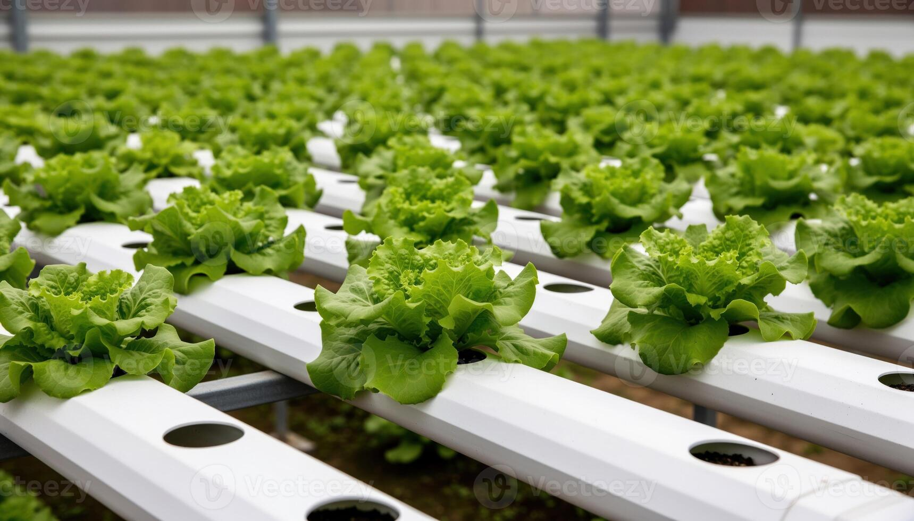
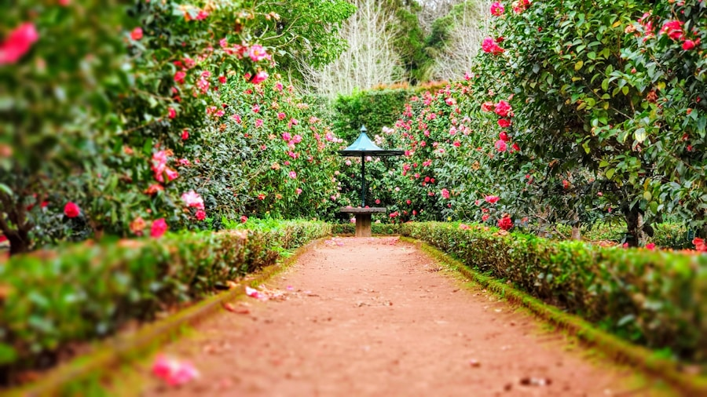
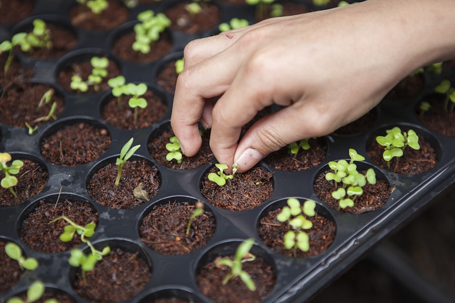

- Generate qualified leads and build client trust by articulating hydroponic system value propositions from first contact.
- Lead site assessments, project planning, and budgeting; configure optimal hydroponic system design to match each client's technical and spatial requirements.
- Prepare and finalize project quotations, balancing client budget with technical scope.
- Direct and coordinate the installation service team through execution planning, on-site delivery, and quality control.
- Own end-to-end project execution and documentation using Zoho CRM, Zoho Books, and Zoho Inventory, resolving on-site customer change requests and technical issues in real time.
- Track project timelines and budget allocation to ensure on-schedule, on-budget delivery.
- Deliver after-sales agronomic support and lead project handover and hands-on training for clients on system operation.
- Author comprehensive project reports capturing execution outcomes and recommendations.

Open to hydroponic & urban farming projects
Abhishek Tale
Project Associate / Hydroponics & Urban Farming
Pune, Maharashtra
From first conversation to harvest-ready systems — design, install, train, and support.
01 — Profile
Built around growing systems, not just selling them.
Agriculture graduate (M.Sc. Botany) specializing in end-to-end hydroponic and urban farming project delivery — from lead generation and system design through installation, execution, and after-sales agronomic support. Skilled in project planning, budgeting, team coordination, and client advisory, with a proven B2B/HORECA sales foundation across India. Proficient in Zoho CRM, Zoho Books, and Zoho Inventory for end-to-end project and client management.
How I work
- Listen, assess the site, and design the right hydroponic setup.
- Quote honestly — budget, scope, and delivery in one picture.
- Coordinate installation, quality, and live issue resolution.
- Hand over with training, agronomic support, and clear reports.
02 — Experience
From field advisory to full hydroponic project ownership.
- Built and managed B2B relationships with established retail accounts, driving fresh exotic vegetable sales across India.
- Generated leads and onboarded new B2B and HORECA clients, expanding the customer base beyond the local region.
- Oversaw packaging, sorting, and grading operations, improvising processes to maintain consistent product quality.
- Advised farmers on safe, effective pesticide and insecticide application, recommending crop-specific, stage-based dosages.
- Supported improved crop health and yield outcomes through proper input usage and timely field guidance.
03 — Skills
A toolkit that covers the farm, the site, and the client file.
Project & Client Management
- Project Planning & Budgeting
- System Design & Configuration
- Site Supervision
- Installation Team Management
- Client Relationship Management
- B2B & HORECA Sales
- Lead Generation
- After-Sales & Agronomic Support
Tools & Systems
- Zoho CRM
- Zoho Books
- Zoho Inventory
- Excel & Google Sheets
- Documentation & Reporting
Technical & Field
- Agricultural Advisory
- Field Operations
- Project Planning
- Problem Solving
Field perspective
Where planning meets living systems.
From crop health and site assessment to installation and client handover, every detail has to work together.


04 — Education & field work
Academic grounding with on-ground agricultural programs.
M.Sc. Botany
Rashtriya College of Science, Hatnur · CGPA 8.27
B.Sc. Agriculture
Vivekananda Agriculture College · CGPA 7.47
HSC
Shivaji Jr. College of Science · 69.69%
SSC
Adarsh Vidyalaya · 81.20%
Jan 2024 – Apr 2024
Rural Agricultural Work Experience (RAWE)
- Coordinated field activities for rural agricultural development, including soil testing, crop assessments, and farmer awareness programs.
- Led team activities across multiple sites and maintained detailed project documentation throughout the program.
Dec 2023
Agro Industrial Attachment — Seed Processing Study
- Studied seed processing operations and supply chain workflows; prepared a project report covering cost structure insights.
Dec 2025 · Maharashtra
Kisan Exhibition — Sales & Trading
Managed direct sales and negotiations with retail customers, farmers, and business buyers at a high-footfall exhibition of exotic vegetables.
05 — Contact
Let’s plan the next grow system.
Available for hydroponic installations, urban farming projects, and B2B conversations across India.